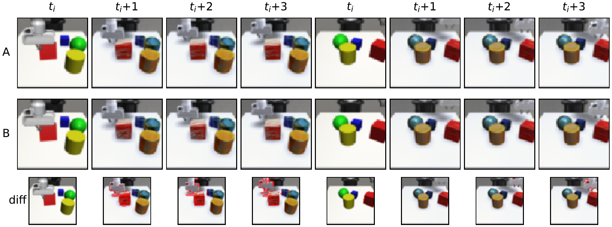
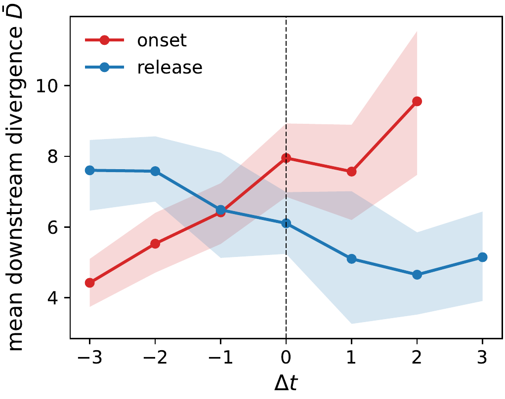
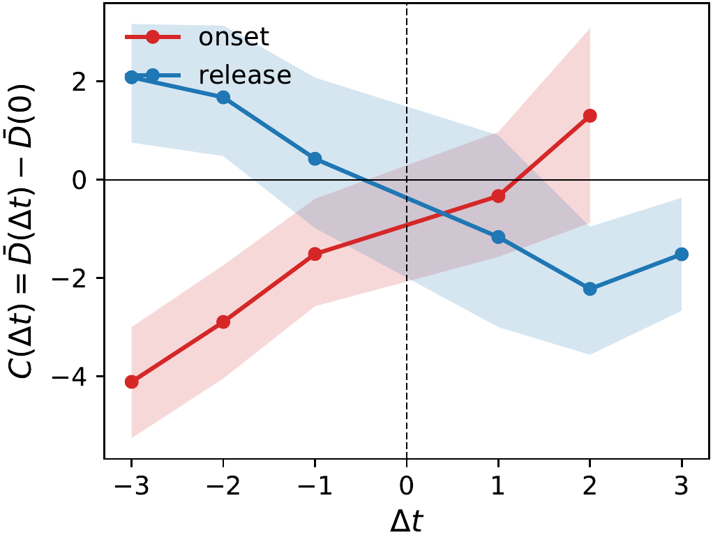

Matched fixed-offset test
Release approach replicates.
At three frames before release, the effect remains in the independent confirmation batch and in transition-isolated windows.
beta = +2.53 · 95% CI [+1.61, +3.53]
NeurIPS 2026 Workshop on Physical Understanding for Decision-Making
A simulator-grounded intervention reveals temporal structure in iVideoGPT's response to millimetre-scale state perturbations that rollout error alone does not show.
 A · original state
A · original state
 cube shift: 0.5-5 mm
B · perturbed state
cube shift: 0.5-5 mm
B · perturbed state
The simulator restores the same logged state twice. Branch B differs only by a calibrated lateral shift of the manipulated cube.

The same model and future actions produce different continuations from the two intervention frames. Red overlays use a fixed raw-difference threshold.
Research question
How does a video world model's predicted continuation change after a millimetre-scale physical state perturbation around contact onset and release?
Does the predicted trajectory resemble one reference trajectory?
Does a nearby physical state change the model's predicted continuation, and when does that response change around contact?
Simulator-grounded intervention
The two model prefixes differ at the injected intervention frame. The other context frames and all future actions remain identical.
We reconstruct the RoboSuite pushing environment and restore an exact logged MuJoCo state. The manipulated cube is then moved laterally by a calibrated 0.5-5 mm before the second frame is rendered.
Both rendered frames are tokenized and spliced into otherwise identical autoregressive prefixes for the same pretrained iVideoGPT model.
Identical pose, velocity, camera, and environment state at the chosen event-relative time.
Use the original intervention frame in the model prefix.
Use the perturbed intervention frame; the remaining context and future actions are unchanged.
Measure how much the resulting continuation changes token by token.
D = mean downstream token-Hamming divergence
A local measure of the model's response to the injected state change.
Main findings
The event-centred sweep puts a single fixed-offset result in temporal context.


Matched fixed-offset test
At three frames before release, the effect remains in the independent confirmation batch and in transition-isolated windows.
beta = +2.53 · 95% CI [+1.61, +3.53]
Same fixed offset
The full profile still rises through onset. At this one fixed offset, however, the onset estimate is not a stable independent result.
Predicted futures
Decoded examples make the intervention's downstream effect concrete without replacing the aggregate quantitative analysis.
What to notice: the response varies across offsets and remains subtle at the level of individual frames. The tracker confirms the same relationship in aggregate: greater token divergence accompanies greater predicted object displacement.
Presentation and resources
A 3:34 presentation of the paper. Watch on YouTube.
Citation
@inproceedings{abbas2026predictive,
title = {Predictive Sensitivity Across Contact Transitions in a Video World Model},
author = {Abbas, Mohammed},
booktitle = {NeurIPS 2026 Workshop on Physical Understanding for Decision-Making},
year = {2026},
url = {https://openreview.net/forum?id=gVEyYKFVac}
}